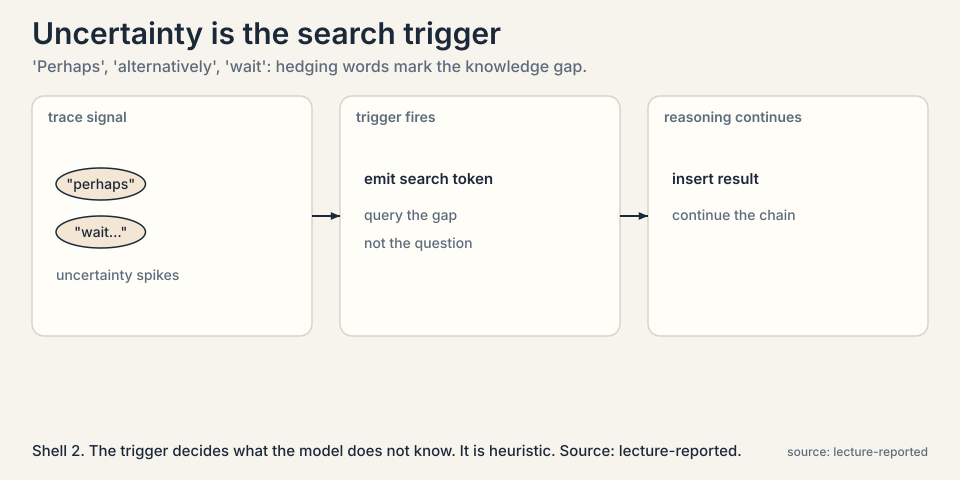
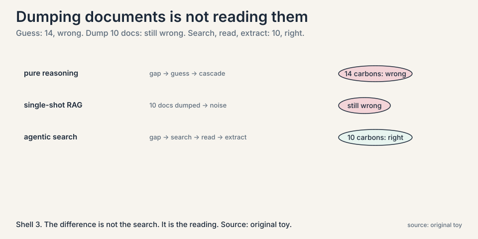
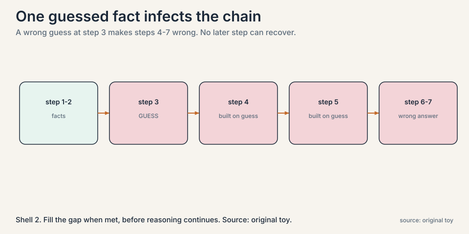
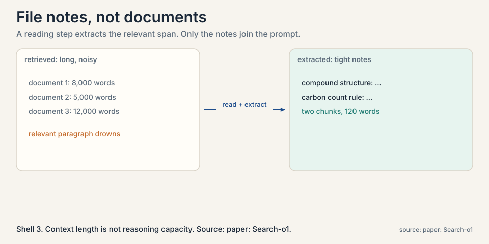
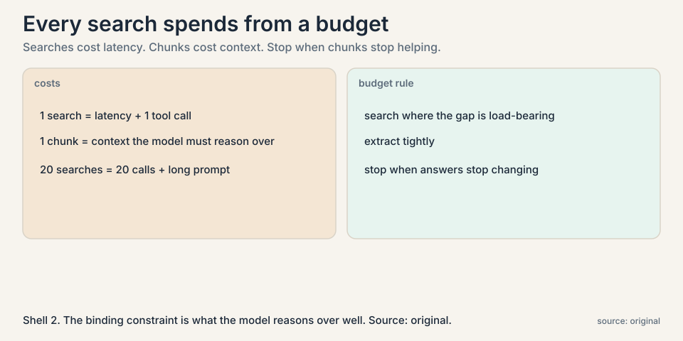

Lecture 7: Search That Reads: Deep Research Agents
Video blocked (ad-blocker or local file mode).
Watch on YouTubeVideo not loading? Watch on YouTube
Aakanksha Chowdhery on Search-o1: agentic retrieval plus 'reason in documents', and uncertainty words in the trace as the trigger to search.
The problem: the model does not know what happened yesterday
Large reasoning models are trained with a knowledge cutoff. If something happened yesterday, it is not in the weights. Worse, the model does not always admit the gap.
Subchapter: knowledge cutoffs and silent gaps
A knowledge gap is a point in the reasoning where the model needs a fact it does not reliably have. The naive fix is retrieval-augmented generation (RAG): turn the question into a search query, fetch documents, paste them into the prompt, and generate. One retrieval, up front, before reasoning starts.
The cutoff is the obvious problem. The silent gap is the worse one. A model that says “I do not know” can be helped. A model that guesses fluently cannot be detected, and its guess becomes a premise for everything after.
Subchapter: uncertainty words as telltales
The lecture points to a telltale: on the GPQA science benchmark, reasoning traces fill with uncertainty words, “perhaps”, “alternatively”, “wait”. The model is guessing past its knowledge, and the guesswork propagates. One wrong guess early in a long chain cascades into a wrong final answer.

The hedging words are not the mechanism. They are the symptom the mechanism reads. The trigger watches the trace for signs the model is guessing, and fires a search at exactly that point. Imperfect, but pointed at the right moment.
First attempt, shown failing: retrieve once, reason once
The lecture’s toy is a chemistry question: after a chain of reactions, how many carbon atoms are in product 3? Watch three approaches.

Subchapter: approach 1, pure reasoning and the cascade
Approach 1, pure reasoning. The model hits an unfamiliar intermediate compound, guesses its structure from the weights, and counts 14 carbons. Wrong. The guess cascaded.

The cascade is the key mechanism. Step 3’s guess becomes step 4’s premise, step 4’s conclusion becomes step 5’s premise, and so on. No later step re-examines step 3, because each step trusts its inputs. A single guessed fact early in a long chain is enough to doom the answer. Filling the gap at the moment it appears, before reasoning continues, is the entire point of searching mid-thought rather than after.
Subchapter: approach 2, single-shot RAG and the drowning
Approach 2, single-shot RAG. The model searches once, retrieves 10 documents about the compounds, pastes all of them into the prompt, and reasons. Still wrong. The documents contain the answer, but buried in noise: 10 long documents exceed what the model can carefully reason over, and the relevant paragraph drowns. Retrieval helped. Dumping hurt.
The failure is structural. A complex question needs different facts at different reasoning steps. One retrieval at the start cannot supply a fact the model only realizes it needs at step 7. And pasting raw documents treats the model’s context as infinite, which it is not.
The key question
What if the model searches in the middle of thinking, whenever it feels a knowledge gap, and reads what it finds instead of filing it unread?
The new idea: agentic search
The lecture builds the answer in two layers.
Subchapter: layer 1, agentic RAG
Agentic RAG. The model emits special tokens when its uncertainty spikes, triggering a search mid-reasoning. The retrieved documents are inserted into the chain, and reasoning continues with the new facts. Retrieval happens per gap, not per question. A multi-part problem triggers several searches, each aimed at the fact the current step needs.
The query is the gap, not the question. At step 7 the model needs the structure of one intermediate compound, so it searches for that compound, not for the original chemistry question. Per-gap queries are narrower and better aimed than the one broad query of single-shot RAG.
Subchapter: layer 2, reason in documents
Reason in documents (Search-o1). Retrieved documents are long and noisy. Instead of pasting them raw, a dedicated step reads each document, judges relevance, and extracts only the needed chunks. The lecture’s human analogy: you do not file every reference unread. You take notes. The extracted notes, not the documents, join the prompt.

Subchapter: the chemistry toy, replayed
Now replay the chemistry toy with both layers. The model reaches the unfamiliar compound, uncertainty spikes, and it searches. It retrieves candidate pages, reads them, extracts the one paragraph giving the compound’s structure, and continues. Final count: 10 carbons. Correct. The difference from approach 2 is not the search. It is the reading.
pure reasoning: gap -> guess -> 14 (wrong, cascades) single-shot RAG: 10 docs dumped -> noise -> still wrong agentic search: gap -> search -> read -> extract -> 10 (right)
Where it breaks, part 1: knowing what to search
The hardest subproblem is the trigger. How does the model know which terms it does not know? The lecture is honest that this is partly heuristic: uncertainty in the trace, named entities that look load-bearing, terms the model cannot define. Search the wrong thing and you retrieve noise. Miss the gap and the guess cascades. The trigger is doing real epistemic work, deciding what the model does not know, and it is imperfect.
Subchapter: false positives and false negatives
The trigger fails in both directions. A false positive fires a search on a fact the model actually knew: wasted latency, wasted context, and retrieved noise that can derail a correct chain. A false negative misses a real gap: the guess cascades exactly as in approach 1. The lecture pairs search with a memory of the reasoning state: a buffer tracking what is being answered and what was assumed. Detecting past guesses is an open problem. The current defense is to search at the first sign of uncertainty rather than after the damage.
Where it breaks, part 2: the context budget
Every retrieved chunk consumes context, and every search costs latency. A deep research session that fires 20 searches and extracts 20 chunks is 20 tool calls plus a long prompt.

Subchapter: context length versus reasoning capacity
The lecture frames this as context engineering: the binding constraint is what the model can actually reason over well, not the nominal context length. Dumping more documents past that point degrades answers, as approach 2 showed. The agent must budget: search where the gap matters, extract tightly, and stop.
The distinction matters because vendors advertise context length, not reasoning capacity over that length. A 1M-token window that the model reasons over sloppily is worse than a tight 20-chunk prompt it reasons over well. The decision rule: measure answer quality against chunk count, not against window size, and stop adding chunks when the answers stop changing.
Mapping back
| Gap failure | Agentic search answer | How |
|---|---|---|
| Knowledge cutoff, silent guesses | Search mid-reasoning | Uncertainty triggers queries per gap, not one query per question. |
| Guesses cascade down the chain | Fill each gap when met | The fact arrives at the step that needs it. Later steps build on facts, not guesses. |
| 10 raw documents drown the reasoner | Reason in documents | Extract relevant chunks. Only the notes join the prompt. |
| One retrieval cannot serve step 7 | Iterate | Multiple search-read-reason rounds per session. |
The honest price
Each search is latency and each chunk is context. The trigger that decides what to look up is heuristic and can miss real gaps or chase false ones. And the whole design assumes the model’s reasoning over long contexts is the bottleneck worth engineering around. As long-context reasoning improves, the optimal amount of extraction shifts. Deep research agents are an applied form of the course’s thesis: test-time compute, spent on search and reading, buys capability the weights do not have.
Go deeper
- OpenAI’s Deep Research announcement (Mark Chen, Head of Frontiers Research): multi-step research on the internet, discovering, synthesizing, and reasoning over content with an adapting plan. https://www.youtube.com/watch?v=YkCDVn3_wiw
- Li et al., Search-o1 (2025): agentic search plus the Reason-in-Documents module. https://arxiv.org/abs/2501.05366
- OpenAI, Introducing Deep Research (2025): the production system this chapter’s ideas became. https://openai.com/index/introducing-deep-research/
Regular RAG retrieves once, up front: question in, documents out, answer generated. Agentic RAG retrieves during reasoning: the model detects a knowledge gap mid-trace, emits a trigger, searches, inserts the result, and continues. A complex question gets several targeted retrievals, one per gap, instead of one broad retrieval per question. Uncertainty signals in the trace: hedging words like “perhaps” and “wait”, entities the model cannot ground, terms it cannot define. The lecture is candid that the trigger is heuristic. It is the agent deciding what it does not know, which is genuinely hard and sometimes wrong in both directions.
Approach 1, pure reasoning: the model hits an unfamiliar intermediate compound, guesses its structure, counts 14 carbons. Wrong, and the guess cascades. Approach 2, single-shot RAG: one search up front, 10 documents pasted in, the relevant paragraph drowns in noise. Still wrong. Approach 3, agentic search: at the gap, uncertainty spikes, the model searches for the compound, reads the pages, extracts the structure paragraph, continues. 10 carbons. Right. Same search capability as approach 2. The reading made the difference. Because retrieval is not reading. Ten raw documents exceed what the model reasons over carefully, so the relevant paragraph drowned. The model had the answer in context and still failed. Context length is not reasoning capacity.
Because the model cannot reason carefully over all of them. In the lecture’s chemistry toy, 10 dumped documents still produced the wrong answer: the relevant paragraph drowned in noise. Search-o1’s fix is a reading step that extracts only the relevant chunks. The prompt gets notes, not documents. Context length is not the same as reasoning capacity over that context. The lecture frames it as a budget problem: retrieve where the gap is load-bearing, extract tightly, stop when marginal chunks stop changing the answer. There is no formula. It is context engineering, and the right budget moves as models’ long-context reasoning improves.
One guessed fact early in a chain infects everything downstream. In the toy, guessing the intermediate compound’s structure made the carbon count wrong, and no later reasoning step could recover because every step assumed the guess. Filling the gap at the moment it appears, before reasoning continues, is the entire point of searching mid-thought rather than after. Only imperfectly, which is why the lecture pairs search with memory of the reasoning state: a buffer tracking what is being answered and what was assumed. Detecting past guesses is an open problem. The current defense is to search at the first sign of uncertainty rather than after the damage.
It queries the gap, not the question. At step 7 the model needs one compound’s structure, so it searches for that compound, not for the original chemistry question. The signals are heuristic: uncertainty words in the trace, named entities that look load-bearing, terms the model cannot define. The lecture is honest that this is partly guesswork: the trigger is the agent doing epistemology on itself, and it errs in both directions. Latency, context, and risk. An unnecessary search burns a tool call and inserts retrieved text that can derail a correct chain. Trigger-happy agents drown in their own retrievals. The tuning problem is real: sensitive enough to catch gaps, specific enough not to chase noise.
A dedicated stage that reads each retrieved document, judges relevance, and extracts only the needed chunks before they join the main reasoning chain. It is separate because mixing long noisy documents into the main trace derails it: the reasoner starts reasoning about the documents instead of the problem. Separation keeps the main chain clean. The extracted notes join the prompt. The documents do not. That is what approach 2 tried, and it failed. The reading step can use a smaller, cheaper model with one job: extract. Division of labor beats asking one model to both reason deeply and read widely at once. It is also cheaper: the extractor runs on documents, the reasoner runs on notes.
Three budgets. A per-question search cap, say 10, so one hard question cannot burn the latency budget. A per-session chunk cap, so the prompt stays inside the model’s effective reasoning window, not its nominal window. And a stopping rule: halt when new chunks stop changing the draft answer. Instrument all three: log searches fired, chunks kept, and answer deltas per chunk. The lecture’s honest price becomes your dashboard. The trigger. At scale, false-positive searches dominate cost: most questions have a few uncertain moments, and searching all of them multiplies latency. The fix is trigger calibration on real traffic: measure which fired searches actually changed answers, and tighten the threshold until the marginal search pays for itself.
Recap: the whole lesson on one screen
- Yesterday is not in the weights. Knowledge cutoffs plus silent guessing. Uncertainty words (“perhaps”, “wait”) mark the gaps.
- Single-shot RAG fails twice. Pure reasoning guesses and cascades: 14, wrong. Dumping 10 documents drowns the reasoner: still wrong.
- The key question. What if the model searches mid-thought and reads what it finds?
- Agentic RAG. Uncertainty triggers searches per gap. Each reasoning step gets the fact it needs. Query the gap, not the question.
- Reason in documents. Extract chunks, file notes, not documents. The chemistry toy: 10 carbons, correct.
- The trigger problem. Deciding what you do not know is heuristic and sometimes wrong both ways. False positives waste budget. False negatives cascade.
- The context budget. Searches cost latency. Chunks cost context. Budget both. Stop when chunks stop helping. Reasoning capacity, not window size, is the constraint.
- The honest price. Test-time compute buys what the weights lack, per question, forever.
Official sources and further reading
Official: - CS329A Part 7: Self-Improvement with Search and Deep Research Agents (Autumn 2025): the lecture this chapter follows. https://www.youtube.com/watch?v=Uni9dqyuuDM - Li et al., Search-o1: Agentic Search-Enhanced Large Reasoning Models (2025). paper
Further reading: - OpenAI, “Introducing Deep Research” (2025): the production system these ideas became. link - “Agentic Context Engineering” (2025): the context-budget framing the lecture cites.
Caveats from these sources. The chemistry toy is the lecture’s illustration with simplified numbers. GPQA uncertainty-word observations are qualitative. The optimal retrieval budget is presented as an open engineering question, not a solved one. The Deep Research announcement URL is OpenAI’s blog post. Verify it loads.
Connections to the other courses
- CS329Z: RAG pipelines in production: chunking, retrieval, and evaluation, the engineering under this chapter’s agent.
- CS329A L03: the search call is a ReAct action. The gap trigger is the thought that precedes it.
- CS329A L05: the memory buffer of reasoning state is a small tree of what is known and assumed. Search fills its gaps.
- CS224N: retrieval and long-context reasoning from the language-model side.